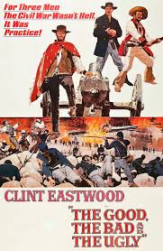

Roman Soobben was born in August of 2010, in New York City. Roman moved a couple of times including San Francisco, Palm Springs, and finally ending up in San Diego. Roman is an only child but has a dog named Jojo. Roman is a guy who is like 5’6 and really cool. Roman is currently a sophomore at Canyon Crest Academy and is taking a class called APCSP. Roman will continue the CS pathway after this class.

Outside of the rigorous and demanding environment of high school, Roman has a couple of passions and hobbies. Roman enjoys playing sports, such as golf and tennis. He also enjoys theatre and is in Harry Potter and the Cursed Child (at CCA!). Roman also likes watching movies. His favorite movie is called the Good, the Bad, and the Ugly, with this really cool guy named Clint Eastwood.Roman isn’t really sure about his future (yet) but hopes to do something related to business as he enjoys creating, brainstorming, and marketing. He hopes to learn different topics during high school so he can broaden his choices, and decide on a career that he enjoys. But for now Roman is just a sophomore, who is trying not to think about the future of college apps. Roman also hopes to someday live in another country, to experience different cultures and have fun. So, yeah, that's honestly all that you really need to know about this guy.